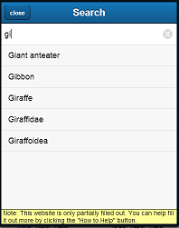

Explanation
What is BioLadder.org?
BioLadder.org is a website that lets you see how life evolved by moving up and down the tree of life.


Clade Diagram:

How do I navigate?
* To close this help popup, press close above.
To find this help again, press the question mark at the top right of the site.
* To go up the tree of life (to earlier splits in evolution), click on the light blue box above the currently open one.
* To go go down the tree of life (to later splits in evolution), click on any of the light blue boxes below the currently open one. The view will center on and open whichever one you click on.
* To go go back, you can use the browser\'s back button.
* To search, click on the magnifying glass in the top right corner and type in a name (eg. Life, Dinosaur, Dog), and click on the one you want.
How is this site organized?
This website shows the evolutionary tree of life through clades.
What are Clades?
Biologists don\'t tend to make claims about direct ancestry and descent. Rather, they group animals by common ancestry into clades*.
A Clade consists of an organism and all its descendants. For example, in the diagram to the right, Coelurosauria is a clade made of some dinosaur and all its descendants, including the giant Tyrannosaurus and all living birds. We probably haven\'t found the precise dinosaur that everything Coelurosauria descendent from, but we still know that everything in Coelurosauria is related.
The clade diagram to the right shows us that Birds are more closely related to the Velociraptor (a small feathered dinosaur with sickle-shaped claws) than to the Compsognathus (a small dinosaur the size of a turkey), and closer to the Compsognathus than to the Tyrannosaurus.
As scientists do their research, they debate precisely how things are related, so many specifics of the tree on this site are likely to change, but the general shape of the tree of life is agreed upon.
* Some commonly known groups of organisms are not clades, so you wont find them on this site. For example, mammals and birds are descended from reptiles, but not included in the group called "reptiles." Since the group "reptiles" doesn\'t include all its descendants, it is not a clade and can\'t be found on this site.